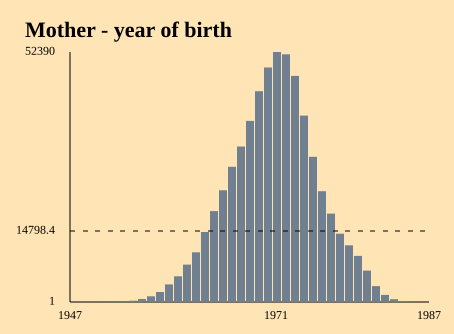
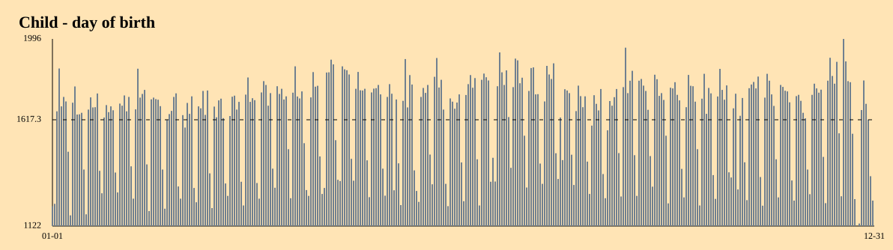
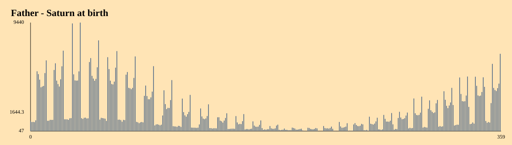
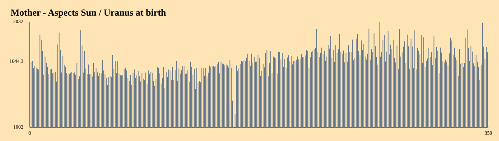

Distribution by year

Here, birth dates are grouped by year.It represents the number of persons born each year.
Distribution by day

The dates are grouped in 366 bins of 1 day.Here we can see that there are less births during the week-ends.
Planetary positions
For each planet, we represent the distributions of their positions (ecliptic longitudes).Data are grouped in 360 bins of 1 degree.

It sometimes shows strange distributions, expressing astronomical or demographical condiderations.This gives one distribution per planet.
Planetary aspects
For a given date, we compute the planetary positions, and we consider the angles between 2 planets. These angles are called aspects.They also vary from 0 to 360 degrees.

File hierarchy
In this program, distributions are stored in CSV files.Such CSV file has 2 columns:
- First column designates a bin.
- Second column designates the number of occurences found in this bin.
| 0 | 1543 |
| 1 | 1548 |
| ... | |
| 359 | 1571 |
1543 records have a planet with longitude between 0° and 1°,
1548 records have a planet with longitude between 1° and 2°
etc.
1548 records have a planet with longitude between 1° and 2°
etc.
Finally, for each date processed by the program, the following hierarchy of files is generated:
distributions
├── aspects
│ ├── JU-NE.csv
│ ├── ...
│ └── VE-UR.csv
├── planets
│ ├── JU.csv
│ ├── ...
│ └── VE.csv
├── day.csv
└── year.csv
This set of distributions is called distrib1.